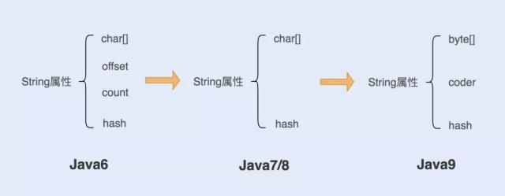
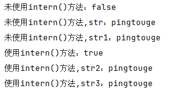
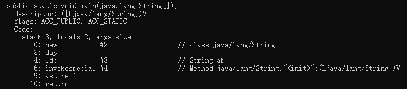
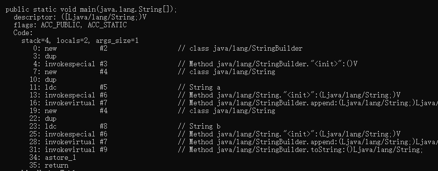
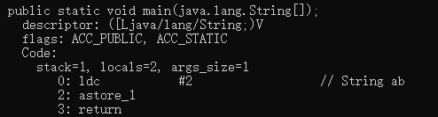

String 对象的实现
String对象是 Java 中使用最频繁的对象之一，所以 Java 公司也在不断的对String对象的实现进行优化，以便提升String对象的性能，看下面这张图，一起了解一下String对象的优化过程。

1. 在 Java6 以及之前的版本中
String对象是对 char 数组进行了封装实现的对象，主要有四个成员变量：char 数组、偏移量 offset、字符数量 count、哈希值 hash。
String对象是通过 offset 和 count 两个属性来定位 char[] 数组，获取字符串。这么做可以高效、快速地共享数组对象，同时节省内存空间，但这种方式很有可能会导致内存泄漏。
2. 从 Java7 版本开始到 Java8 版本
从 Java7 版本开始，Java 对String类做了一些改变。String类中不再有 offset 和 count 两个变量了。这样的好处是String对象占用的内存稍微少了些，同时 String.substring 方法也不再共享 char[]，从而解决了使用该方法可能导致的内存泄漏问题。
3. 从 Java9 版本开始
将 char[] 数组改为了 byte[] 数组，为什么需要这样做呢？我们知道 char 是两个字节，如果用来存一个字节的字符有点浪费，为了节约空间，Java 公司就改成了一个字节的byte来存储字符串。这样在存储一个字节的字符是就避免了浪费。
在 Java9 维护了一个新的属性 coder，它是编码格式的标识，在计算字符串长度或者调用indexOf() 函数时，需要根据这个字段，判断如何计算字符串长度。coder 属性默认有 0 和 1 两个值， 0 代表Latin-1（单字节编码），1 代表UTF-16 编码。如果 String判断字符串只包含了 Latin-1，则 coder 属性值为 0 ，反之则为 1。
String 对象的创建方式
1、通过字符串常量的方式
String str= “pingtouge”的形式，使用这种形式创建字符串时， JVM 会在字符串常量池中先检查是否存在该对象，如果存在，返回该对象的引用地址，如果不存在，则在字符串常量池中创建该字符串对象并且返回引用。使用这种方式创建的好处是：避免了相同值的字符串重复创建，节约了内存。
2、String()构造函数的方式
String str = new String("pingtouge")的形式，使用这种方式创建字符串对象过程就比较复杂，分成两个阶段，首先在编译时，字符串pingtouge会被加入到常量结构中，类加载时候就会在常量池中创建该字符串。然后就是在调用new()时，JVM 将会调用String的构造函数，同时引用常量池中的pingtouge字符串，在堆内存中创建一个String对象并且返回堆中的引用地址。
了解了String对象两种创建方式，我们来分析一下下面这段代码，加深我们对这两种方式的理解，下面这段代码片中，str是否等于str1呢？
String str = "pingtouge";String str1 = newString("pingtouge"); system.out.println(str==str1)
我们逐一来分析这几行代码，首先从String str = “pingtouge”开始，这里使用了字符串常量的方式创建字符串对象，在创建pingtouge字符串对象时，JVM会去常量池中查找是否存在该字符串，这里的答案肯定是没有的，所以JVM将会在常量池中创建该字符串对象并且返回对象的地址引用，所以str指向的是pingtouge字符串对象在常量池中的地址引用。
然后是String str1 = new String(“pingtouge”)这行代码，这里使用的是构造函数的方式创建字符串对象，根据我们上面对构造函数方式创建字符串对象的理解，str1得到的应该是堆中pingtouge字符串的引用地址。由于str指向的是pingtouge字符串对象在常量池中的地址引用而str1指向的是堆中pingtouge字符串的引用地址，所以str肯定不等于str1。
String 对象的不可变性
从我们知道String对象的那一刻起，我想大家都知道了String对象是不可变的。那它不可变是怎么做到的呢？Java 这么做能带来哪些好处？我们一起来简单的探讨一下，先来看看String 对象的一段源码：
1 | public final class String |
从这段源码中可以看出，String类用了 final 修饰符，我们知道当一个类被 final 修饰时，表明这个类不能被继承，所以String类不能被继承。这是String不可变的第一点
再往下看，用来存储字符串的char value[]数组被private 和final修饰，我们知道对于一个被final的基本数据类型的变量，则其数值一旦在初始化之后便不能更改。这是String不可变的第二点。
Java 公司为什么要将String设置成不可变的，主要从以下三方面考虑：
- 保证 String 对象的安全性。假设 String 对象是可变的，那么 String 对象将可能被恶意修改。
- 保证 hash 属性值不会频繁变更，确保了唯一性，使得类似 HashMap 容器才能实现相应的 key-value 缓存功能。
- 可以实现字符串常量池
String 对象的优化
字符串是我们常用的Java类型之一，所以对字符串的操作也是避免不了的，在对字符串的操作过程中，如果使用不当，性能会天差地别。那么在字符串的操作过程中，有哪些地方需要我们注意呢？
优雅的拼接字符串
字符串的拼接是对字符串操作使用最频繁的操作之一，由于我们知道String对象的不可变性，所以我们在做拼接时尽可能少的使用+进行字符串拼接或者说潜意识里认为不能使用+进行字符串拼接，认为使用+进行字符串拼接会产生许多无用的对象。事实真的是这样吗？我们来做一个实验。我们使用+来拼接下面这段字符串。
String str8 = "ping" +"tou"+"ge";
一起来分析一下这段代码会产生多少个对象？如果按照我们理解的意思来分析的话，首先会创建ping对象，然后创建pingtou对象，最后才会创建pingtouge对象，一共创建了三个对象。真的是这样吗？其实不是这样的，Java 公司怕我们程序员手误，所以对编译器进行了优化，上面的这段字符串拼接会被我们的编译器优化，优化成一个String str8 = “pingtouge”;对象。除了对常量字符串拼接做了优化以外，对于使用+号动态拼接字符串，编译器也做了相应的优化，以便提升String的性能，例如下面这段代码：
String str = "pingtouge";for(int i=0; i<1000; i++) { str = str + i;}
编译器会帮我们优化成这样：
1 | String str = "pingtouge";for(int i=0; i<1000; i++) { |
可以看出 Java 公司对这一块进行了不少的优化，防止由于程序员不小心导致String性能急速下降，尽管 Java 公司在编译器这一块做了相应的优化，但是我们还是能看出 Java 公司优化的不足之处，在动态拼接字符串时，虽然使用了 StringBuilder 进行字符串拼接，但是每次循环都会生成一个新的 StringBuilder 实例，同样也会降低系统的性能。
所以我们在做字符串拼接时，我们需要从代码的层面进行优化，在动态的拼接字符串时，如果不涉及到线程安全的情况下，我们显示的使用 StringBuilder 进行拼接，提升系统性能，如果涉及到线程安全的话，我们使用 StringBuffer 来进行字符串拼接
巧妙的使用 intern() 方法
1 | /** |
这是 intern()函数的官方注释说明，大概意思就是 intern 函数用来返回常量池中的某字符串，如果常量池中已经存在该字符串，则直接返回常量池中该对象的引用。否则，在常量池中加入该对象，然后 返回引用。
有一位Twitter工程师在QCon全球软件开发大会上分享了一个他们对 String对象优化的案例，他们利用String.intern()方法将以前需要20G内存存储优化到只需要几百兆内存。这足以体现String.intern()的威力，我们一起来看一个例子，简单的了解一下String.intern()的用法。
1 | public static void main(String[] args) { |

从结果中可以看出，未使用String.intern()方法时，构造相同值的字符串对象返回不同的对象引用地址，使用String.intern()方法后，构造相同值的字符串对象时，返回相同的对象引用地址。这能帮我们节约不少空间。
String.intern()方法虽然好，但是我们要结合场景使用，不能乱用，因为常量池的实现是类似于一个HashTable的实现方式，HashTable 存储的数据越大，遍历的时间复杂度就会增加。如果数据过大，会增加整个字符串常量池的负担。
灵活的字符串的分割
字符串的分割是字符串操作的常用操作之一，对于字符串的分割，大部分人使用的都是 Split() 方法，Split() 方法大多数情况下使用的是正则表达式，这种分割方式本身没有什么问题，但是由于正则表达式的性能是非常不稳定的，使用不恰当会引起回溯问题，很可能导致 CPU 居高不下。在以下两种情况下 Split() 方法不会使用正则表达式：
传入的参数长度为1，且不包含“.$|()[{^?*+\”regex元字符的情况下，不会使用正则表达式传入的参数长度为2，第一个字符是反斜杠，并且第二个字符不是ASCII数字或ASCII字母的情况下，不会使用正则表达式所以我们在字符串分割时，应该慎重使用 Split() 方法，首先考虑使用 String.indexOf() 方法进行字符串分割，如果 String.indexOf() 无法满足分割要求，再使用 Split() 方法，使用 Split() 方法分割字符串时，需要注意回溯问题。
String类创建了几个对象？
1、String str = “hello”;
创建了一个对象
jvm在编译阶段会判断常量池中是否有“hello”这个常量对象，如果有，str就直接指向这个常量的引用，如果没有就会在常量池中创建这个对象。
2、String str = new String（“hello”）；
创建了两个对象
jvm编译阶段会判断常量池中是否有“hello”这个常量对象，进而判断是否创建常量对象，然后运行阶段通过new关键字在java 堆上开辟一块儿空间来创建String 对象。
3、String str = “hello” + “world”；
创建了一个对象
jvm编译阶段通过编译器优化后，会把字符串常量直接合并成“helloworld”，所以在常量池中只创建了一个对象。
4、String str = “hello” + new String（“world”）；
创建了五个对象
常量池对象”hello”,“world”,new String(“world”)创建堆对象，还有一个堆对象“helloworld”，还有一个StringBuilder对象。
题1： String str =new String(“ab”) 会创建几个对象？
1 | public class StringNewTest { |
javap -v StringNewTest.class反编译后， 部分片段如下：

根据反编译后字节码分析：
一个对象是：new关键字在堆空间创建的；
另一个对象是：字符串常量池中的对象”ab”。 （如果前后文中还有代码，并且已经有 ab 常量在常量池存在时，ab 将不再创建，因为在常量池只能存在一份相同的对象）
结论是至少是2个对象。
题2：String str =new String(“a”) + new String(“b”) 会创建几个对象 ?
1 | public class StringNewTest { |
javap -v StringNewTest.class 反编译后， 部分片段如下：

根据反编译后字节码分析：
对象1：new StringBuilder()
对象2： new String(“a”)
对象3： 常量池中的”a”
对象4：new String(“b”)
对象5： 常量池中的”b”
深入剖析： StringBuilder 的 toString()方法中有 new String(value, 0, count) ，
对象6 ：new String(“ab”)
强调一下：
StringBuilder 的 toString()的调用，在字符串常量池中，没有生成”ab”。
如果前后文中还有代码，并且已经常量在常量池存在时，相同的常量 将不再创建，因为在常量池只能存在一份相同的对象。
结论是至少是6个对象。
题3：String str =“a”+ “b”会创建几个对象 ?
1 | public class StringNewTest { |
javap -v StringNewTest.class 反编译后， 部分片段如下：

"a" + "b"在编译时，就已经编译为 ab， 被放到常量池中。
所以只有一个对象 ：ab
注意：
如果前后文中还有代码，并且已经有 ab 常量在常量池存在时，ab 将不再创建，因为在常量池只能存在一份相同的对象。
字符串拼接操作的总结
常量 与 常量 的拼接结果在 常量池，原理是 编译期 优化；
常量池 中不会存在相同内容的常量；
只要其中一个是变量，结果在堆中。 如： String s2 = s1+"DEF" ;
变量拼接的原理是StringBuilder
如果拼接的结果是调用 intern()方法，则主动将常量池中 还没有的字符串 对象放入池中，并返回地址。

...
...
Copyright 2021 sunfy.top ALL Rights Reserved